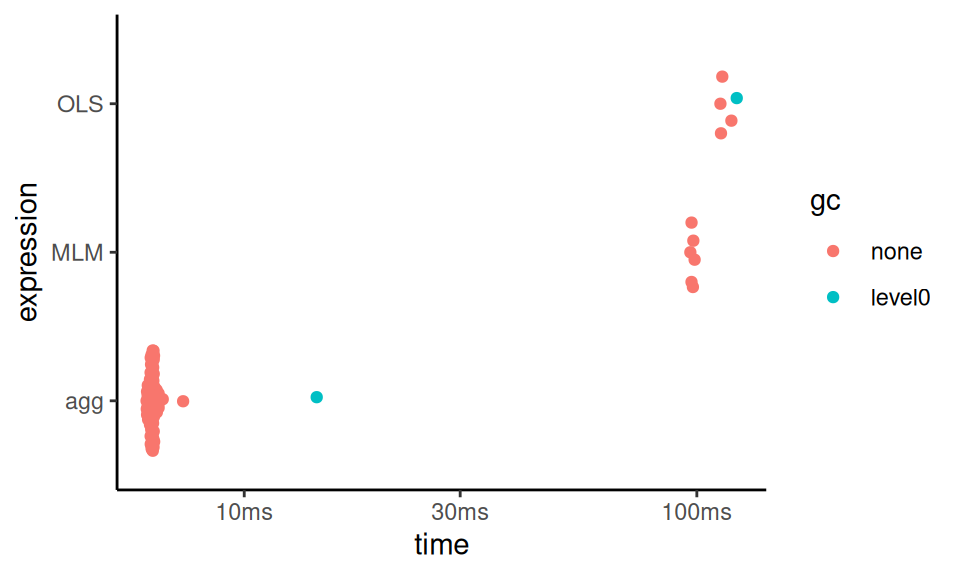
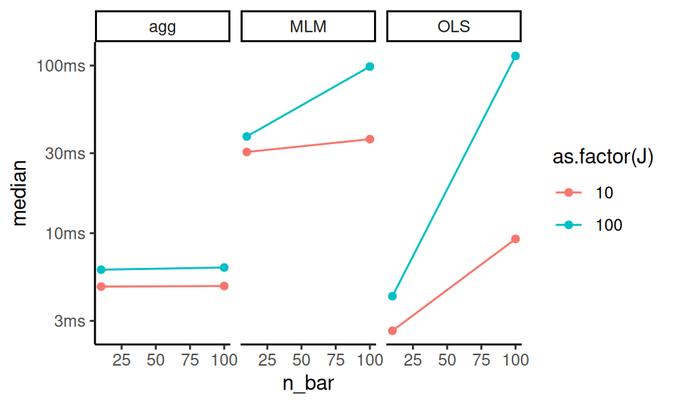

A Coding Reference
In this appendix chapter we give a bit more detail on some core programming skills that we use throughout the book.
A.1 How to repeat yourself
At the heart of simulation is replication: we want to do the same task over and over. In this book we have showcased a variety of tools to replicate a random process. In this section we give a formal presentation of these tools.
A.1.1 Using replicate()
The replicate( n, expr, simplify ) method is a base-R function, which takes two arguments: a number n and an expression expr to run repeatedly. You can set simplify = FALSE to get the output of the function as a list, and if you set simplify = TRUE then R will try to simplify your results into an array.
For simple tasks where your expression gives you a single number, replicate will produce a vector of numbers:
## [1] 0.6666667 1.0000000 0.6666667 1.0000000
## [5] 0.6666667If you do not simplify, you then will need to massage your results:
one_run <- function() {
dd = rpois( 3, lambda = 1 )
tibble( mean = mean( dd ), sd = sd( dd ) )
}
rps <- replicate( 2, one_run(), simplify = FALSE )
rps## [[1]]
## # A tibble: 1 × 2
## mean sd
## <dbl> <dbl>
## 1 1.67 1.53
##
## [[2]]
## # A tibble: 1 × 2
## mean sd
## <dbl> <dbl>
## 1 1.33 1.15In particular, you will probably stack all your tibbles to make one large dataset:
## # A tibble: 2 × 2
## mean sd
## <dbl> <dbl>
## 1 1.67 1.53
## 2 1.33 1.15Note that you give replicate a full piece of code that would run on its own. You can even give a whole block of code in curly braces. This is exactly the same code as before:
rps <- replicate( 2, {
dd = rpois( 3, lambda = 1 )
tibble( mean = mean( dd ), sd = sd( dd ) )
}, simplify = FALSE ) %>%
bind_rows()The replicate() method is good for simple tasks, but for more general use, you will probably want to use map().
A.1.2 Using map()
The tidyverse way of repeating oneself is the map() method. The nice thing about map() is you map over a list of values, and thus can call a function repeatedly, but with a shifting set of inputs.
one_run_v2 <- function( N ) {
dd = rpois( N, lambda = 1 )
tibble( mean = mean( dd ), sd = sd( dd ) )
}
n_list = c(2, 5)
rps <- map( n_list, one_run_v2 )
rps## [[1]]
## # A tibble: 1 × 2
## mean sd
## <dbl> <dbl>
## 1 0.5 0.707
##
## [[2]]
## # A tibble: 1 × 2
## mean sd
## <dbl> <dbl>
## 1 0.8 0.837You again would want to stack your results:
## # A tibble: 2 × 2
## mean sd
## <dbl> <dbl>
## 1 0.5 0.707
## 2 0.8 0.837We have a small issue here, however, which is we lost what we gave map() for each call.
If we know we only get one row back from each call, we can add the column directly:
A better approach is to name your list of input parameters, and then your map function can add those names for you as a new column when you stack:
## # A tibble: 2 × 3
## n mean sd
## <chr> <dbl> <dbl>
## 1 2 2 0
## 2 5 1.4 1.14An advantage here is if you are returning multiple rows (e.g., one row for each estimator tested in a more complex simulation), all the rows will get named correctly and automatically.
In older tidyverse worlds, you will see methods such as map_dbl() or map_dfr(). These will automatically massage your output into the target type. map_dfr() will automatically bind rows, and map_dbl() will try to simplify the output into a list of doubles. Modern tidyverse no longer likes this, which we find somewhat sad.
To read more about map(), check out out Section 21.5 of R for Data Science (1st edition), which provides a more thorough introduction to mapping.
A.1.3 map with no inputs
If you do not have parameters, but still want to use map(), you can. E.g.,
## # A tibble: 3 × 2
## mean sd
## <dbl> <dbl>
## 1 1 1
## 2 0.667 0.577
## 3 0 0The weird “(.)” is a shorthand for a function that takes one argument and then calls one_run() with no arguments. We are using the 1:3 notation to just make a list of the right length (3 replicates, in this case) to map over. A lot of fuss! Just use replicate()
To make all of this more clear, consider passing arguments that you manipulate on the fly:
## # A tibble: 2 × 2
## mean sd
## <dbl> <dbl>
## 1 1 1.41
## 2 1.16 1.11Anonymous functions, as these are called, can be useful to connect your pieces of simulation together.
A.1.4 Other approaches for repetition
In the past, there was a tidyverse method called rerun(), but it is currently out of favor.
Originally, rerun() did exactly that: you gave it a number and a block of code, and it would rerun the block of code that many times, giving you the results as a list.
rerun() and replicate() are near equivalents.
As we saw, replicate() does what its name suggests—it replicates the result of an expression a specified number of times. Setting simplify = FALSE returns the output as a list (just like rerun() did).
A.2 Default arguments for functions
To write functions that are both easy to use and configurable, set default arguments. For example,
## [1] 1020## [1] 520## [1] 1005## [1] 105We can still call my_function() when we don’t know what the arguments are, but then when we know more about the function, we can specify things of interest.
Lots of R commands work exactly this way, and for good reason.
Especially for code to generate random datasets, default arguments can be a lifesaver as you can then call the method before you know exactly what everything means.
For example, consider the blkvar package that has some code to generate blocked randomized datasets.
We might locate a promising method, and type it in:
## Error in generate_blocked_data(): argument "n_k" is missing, with no defaultThat didn’t work, but let’s provide some block sizes and see what happens:
## B Y0 Y1
## 1 B1 0.1651598 6.371708
## 2 B1 -0.7767558 5.613676
## 3 B1 -1.4736741 4.856552
## 4 B2 -1.0636928 4.448634
## 5 B2 0.1533518 4.334540Nice! We see that we have a block ID and the control and treatment potential outcomes. We also don’t see a random assignment variable, so that tells us we probably need some other methods as well. But we can play with this as it stands right away.
Next we can see that there are many things we might tune:
## function (n_k, sigma_alpha = 1, sigma_beta = 0, beta = 5, sigma_0 = 1,
## sigma_1 = 1, corr = 0.5, exact = FALSE)
## NULLThe documentation will tell us more, but if we just need some sample data, we can quickly assess our method before having to do much reading and understanding. Only once we have identified what we need do we have to turn to the documentation itself.
A.3 Profiling Code
Simulations can be extremely time intensive. With a large simulation it can also be hard to determine why, exactly, the simulation is as long as it is. Is it one of the methods? Is it just that as sample size grows, the time grows far more rapidly than one might expect? Knowing the answer to these questions can allow you to plan out your simulation and, sometimes, make some hard choices as to what things you want to include.
There are a variety of tools for timing code. We are going to go through a few useful ones here.
A.3.1 Using Sys.time() and system.time()
The simplest way to time code is to use the system.time() function.
This function takes an expression and returns the time it took to run that expression.
For example:
## user system elapsed
## 0.035 0.000 0.035Elapsed time is how much time actually passed. The user time is how much time your computer spent on the task at hand, not including if it paused to do something else (like deal with a mouse click or pop-up message). With current computers with multiple cores, you would expect user and elapsed time to be very similar.
You can also start and stop a clock by checking the system time:
## [1] -0.0006836837## [1] 1.000656## Time difference of 0.04079461 secsThis can be useful, but be careful, as the time is stored along with the units. If your simulation takes a long time, it will flip from a lot of seconds to a few minutes, and you can end up thinking something that took much, much longer was actually fast.
A.3.2 The tictoc package
The tictoc package is a very simple way to time code.
It has two functions, tic() and toc(), which you can use to mark the start and end of a block of code.
## Generating data: 0.035 sec elapsedIt is basically like Sys.time() but it has a few more features, such as being able to label the time you are measuring.
A.3.3 The bench package
The bench package provides some powerful tools for timing code, and is in particular good for comparing different ways of doing the same (or similar) thing.
bench::mark() runs each expression 10 times (by default) and tracks how long the computations take. It then summarizes the distribution of timings.
For example, we can time how long it takes to analyze some data from our cluster RCT experiment:
library( bench )
dat <- gen_cluster_RCT(n_bar=100, J = 100)
timings <- mark(
MLM = quiet_analysis_MLM(dat),
OLS = analysis_OLS(dat),
agg = analysis_agg(dat),
check = FALSE
)
timings## # A tibble: 3 × 6
## expression min median `itr/sec` mem_alloc
## <bch:expr> <bch:tm> <bch:tm> <dbl> <bch:byt>
## 1 MLM 96.75ms 97.68ms 10.2 25.78MB
## 2 OLS 112.75ms 113.45ms 8.72 2.51MB
## 3 agg 6.08ms 6.26ms 159. 472.8KB
## # ℹ 1 more variable: `gc/sec` <dbl>You can even get a viz of how long everything took:

The “gc” coloring in the above indicates runs where “garbage collection” took place, meaning R paused to empty out some used memory.
You can also use bench::press() to run a variety of configurations to explore how timing works under changed parameters.
To illustrate, let’s compare how long each method for the cluster RCT running example takes:
source( here::here("case_study_code/clustered_data_simulation.R" ) )
timings <- bench::press(
n_bar = c( 10, 100 ),
J = c( 10, 100 ),
{
dat <- gen_cluster_RCT(n_bar=n_bar, J = J)
bench::mark(
MLM = quiet_analysis_MLM(dat),
OLS = analysis_OLS(dat),
agg = analysis_agg(dat),
check = FALSE
)
}
)## Running with:
## n_bar J## 1 10 10## 2 100 10## 3 10 100## 4 100 100And we can make our custom plot of time:
timings$name = attr( timings$expression, "description" )
ggplot( timings, aes( n_bar, median, color = as.factor(J) ) ) +
facet_wrap( ~ name ) +
geom_point() + geom_line()
Note the timings object is not quite a classic tibble, and the expression at start captures the code run. The “name” line grabs the names given in the initial evaluation so we can make the plot the way we want.
A.3.4 Profiling with profvis
Sometimes you don’t have a head to head comparison in mind, but are instead trying to find out where in your full simulation the time is being spent.
The profvis package allows for exploring this sort of question.
You “profile” a block of code and then you can explore the results in a browser inside of RStudio.
For example, you might have the following:
profvis( {
replicate( 10, {
data <- gen_cluster_RCT( n_bar = 100, J = 100 )
res1 <- quiet_analysis_MLM(data)
res2 <- analysis_OLS(data)
res3 <- analysis_agg(data)
} )
} )In the browser you will get the code you ran, and you can see how long each line took to run. You will get little “time” bars—the bigger the bar, the greater fraction of time that line took versus the other lines.
You can also click on the “Data” tab and it will give you a series of cascades of function calls, so you can see how long each function took to run. You click on a function to expand it, and it will show you how long each part inside took.
A.4 Optimizing code (and why you often shouldn’t)
Optimizing code is when you spend a bit more human effort to write code that will run faster on your computer. In some cases, this can be a critical boost to running a simulation, where you inherently will be doing things a lot of times. Cutting runtime down will always be tempting, as it allows you to run more replicates and get more precisely estimated performance measures for your simulation.
That being said, generally optimize code only after discovering you need to. Optimizing as you go usually means you will spend a lot of time wrestling with code far more complicated than it needs to be. For example, often it is the estimation method that will take a lot of computational time, so having very fast data generation code will not help shorten the overall run time of a simulation much, as you are tweaking something that is only a small part of the overall pie, in terms of time. Keep things simple; in general your time is more important than the computer’s time.
Overall, computational efficiency should usually be a secondary consideration when you are starting to design a simulation study. It is better to produce accurate code, even if it is a bit slow, than to write code that is speedy but hard to follow (or even worse, that produces incorrect results).
That warning made, in the next sections we will look at a few optimization efforts applied to the ANOVA example from Section 5 to illustrate some principles of optimization that come up a lot in simulation projects.
A.4.1 Hand-building functions
In our initial ANOVA simulation we used the system-implemented ANOVA. An alternative approach would be to “hand roll” the ANOVA F statistic and test directly. Doing so by hand can set you up to implement modified versions of these tests later on. Also, although hand-building a method does take more work to program, it can result in a faster piece of code (this actually is the case here) which in turn can make the overall simulation faster.
Following the formulas on p. 129 of Brown and Forsythe (1974) we write our own function as so:
ANOVA_F <- function(sim_data) {
x_bar <- with(sim_data, tapply(x, group, mean))
s_sq <- with(sim_data, tapply(x, group, var))
n <- table(sim_data$group)
g <- length(x_bar)
df1 <- g - 1
df2 <- sum(n) - g
msbtw <- sum(n * (x_bar - mean(sim_data$x))^2) / df1
mswn <- sum((n - 1) * s_sq) / df2
fstat <- msbtw / mswn
pval <- pf(fstat, df1, df2, lower.tail = FALSE)
return(pval)
}We are using data as generated in Chapter 6. To see the difference between our version and R’s version, we benchmark:
timings <- bench::mark(Rfunction = ANOVA_F_aov(sim_data),
direct = ANOVA_F(sim_data))
summary( timings )[1:4] %>%
mutate( speed_up = as.numeric( max(median)/median ) ) %>%
knitr::kable( digits = 2 )| expression | min | median | itr/sec | speed_up |
|---|---|---|---|---|
| Rfunction | 408µs | 448µs | 2205.58 | 1.00 |
| direct | 166µs | 179µs | 5466.37 | 2.51 |
The direct function is 2.5 times faster than the built-in R function.
This result is not unusual. Built-in R functions usually include lots of checks and error-handling, which take time to compute. These checks are crucial for messy, real-world data analysis but unnecessary with our pristine, simulated data. Here we can skip them by doing the calculations directly.
In general, however, this is a trade-off: writing something yourself gives you a lot of chance to do something wrong, throwing off all your simulations. It might be faster, but you may pay dearly for it in terms of extra hours coding and debugging. Optimize only if you need to!
A.4.2 Computational efficiency versus simplicity
On the data generation side, an alternative approach to having a function that, for each call, generates a single set of data, would be to write a function that generates multiple sets of simulated data all at once.
For example, for our ANOVA example we could specify that we want R replications of the study and have the function spit out a matrix with R columns, one for each simulated dataset:
generate_data_matrix <- function(mu, sigma_sq, sample_size, R) {
N <- sum(sample_size)
g <- length(sample_size)
group <- rep(1:g, times = sample_size)
mu_long <- rep(mu, times = sample_size)
sigma_long <- rep(sqrt(sigma_sq), times = sample_size)
x_mat <- matrix(rnorm(N * R, mean = mu_long, sd = sigma_long),
nrow = N, ncol = R)
sim_data <- list(group = group, x_mat = x_mat)
return(sim_data)
}
generate_data_matrix(mu = mu, sigma_sq = sigma_sq,
sample_size = sample_size, R = 4)## $group
## [1] 1 1 1 2 2 2 2 2 2 3 3 4 4 4 4
##
## $x_mat
## [,1] [,2] [,3]
## [1,] 1.26870299 1.5642919 0.6406546
## [2,] 0.99185114 -0.5337515 1.5034328
## [3,] 3.86548143 -0.3516061 3.1331630
## [4,] -0.42737168 1.7968808 -1.6674356
## [5,] 0.04295042 3.6549941 1.5263114
## [6,] 2.19822163 1.2499138 4.2095023
## [7,] 3.62753843 3.3775802 3.6928361
## [8,] 0.38156702 -0.2198489 4.7862408
## [9,] -0.37106349 3.3090424 3.6517661
## [10,] 10.32841575 7.7543537 2.7444398
## [11,] 6.15685142 6.1114632 6.1844398
## [12,] 6.56401936 6.1042056 6.9282227
## [13,] 6.35796928 5.8794862 5.7513120
## [14,] 7.58531907 7.3287865 6.4457508
## [15,] 4.40484667 6.1415114 5.7129288
## [,4]
## [1,] 1.24379441
## [2,] 1.36759212
## [3,] 0.03474835
## [4,] 1.31780733
## [5,] 1.46988800
## [6,] 1.50577296
## [7,] -0.29084792
## [8,] 2.96869847
## [9,] 5.64469894
## [10,] 7.71521064
## [11,] 2.81286116
## [12,] 6.67451638
## [13,] 6.98455743
## [14,] 8.06684327
## [15,] 4.97497013This approach is a bit more computationally efficient because the setup calculations (getting N, g, group, mu_full, and sigma_full) only have to be done once instead of once per replication. It also makes clever use of vector recycling in the call to rnorm(). However, the structure of the resulting data is more complicated, which will make it more difficult to do the later estimation steps.
Furthermore, if the number of replicates R is large and each replication produces a large dataset, this “all-at-once” approach will entail generating and holding very large amounts of data in memory, which can create other performance issues.
On balance, we recommend the simpler approach of writing a function that generates a single simulated dataset per call (unless and until you have a principled reason to do otherwise).
It is usually the case that most time spent in the simulation is the analyzing of the data, not the generating it, so these savings are usually not worth the bother.
A.4.3 Reusing code to speed up computation
Once we have our own ANOVA method to go with our own Welch method, we see some glaring redundancies.
In particular, both ANOVA_F and Welch_F start by taking the simulated data and calculating summary statistics for each group, using the following code:
x_bar <- with(sim_data, tapply(x, group, mean))
s_sq <- with(sim_data, tapply(x, group, var))
n <- table(sim_data$group)In the interest of not repeating ourselves, it would better to pull this code out as a separate function and then re-write the ANOVA_F and Welch_F functions to take the summary statistics as input. Here is a function that takes simulated data and returns a list of summary statistics:
summarize_data <- function(sim_data) {
x_bar <- with(sim_data, tapply(x, group, mean))
s_sq <- with(sim_data, tapply(x, group, var))
n <- table(sim_data$group)
list(
x_bar = as.numeric( x_bar ),
s_sq = as.numeric( s_sq ),
n = as.numeric( n )
)
}We just packaged the code from above:
sim_data = generate_data(mu=mu, sigma_sq=sigma_sq, sample_size=sample_size)
summarize_data(sim_data)## $x_bar
## [1] 1.030084 1.836180 7.565755 5.596047
##
## $s_sq
## [1] 0.5573001 5.8969878 10.6804743 0.8171245
##
## $n
## [1] 3 6 2 4Now we can re-write both our \(F\)-test functions to use the output of this function:
ANOVA_F_agg <- function(x_bar, s_sq, n) {
g = length(x_bar)
df1 <- g - 1
df2 <- sum(n) - g
msbtw <- sum(n * (x_bar - weighted.mean(x_bar, w = n))^2) / df1
mswn <- sum((n - 1) * s_sq) / df2
fstat <- msbtw / mswn
pval <- pf(fstat, df1, df2, lower.tail = FALSE)
return(pval)
}
summary_stats <- summarize_data(sim_data)
with(summary_stats, ANOVA_F_agg(x_bar = x_bar, s_sq = s_sq, n = n))## [1] 0.006152478Welch_F_agg <- function(x_bar, s_sq, n) {
g = length(x_bar)
w <- n / s_sq
u <- sum(w)
x_tilde <- sum(w * x_bar) / u
msbtw <- sum(w * (x_bar - x_tilde)^2) / (g - 1)
G <- sum((1 - w / u)^2 / (n - 1))
denom <- 1 + G * 2 * (g - 2) / (g^2 - 1)
W <- msbtw / denom
f <- (g^2 - 1) / (3 * G)
pval <- pf(W, df1 = g - 1, df2 = f, lower.tail = FALSE)
return(pval)
}
with(summary_stats, Welch_F_agg(x_bar = x_bar, s_sq = s_sq, n = n))## [1] 0.0173869The results are the same as before.
We should always test any optimized code against something we know is stable, since optimization is an easy way to get bad bugs. Here we check against R’s implementation:
summary_stats <- summarize_data(sim_data)
F_results <- with(summary_stats,
ANOVA_F_agg(x_bar = x_bar, s_sq = s_sq, n = n))
aov_results <- oneway.test(x ~ factor(group), data = sim_data,
var.equal = TRUE)
all.equal(aov_results$p.value, F_results)## [1] TRUEW_results <- with(summary_stats,
Welch_F_agg( x_bar = x_bar,
s_sq = s_sq, n = n))
aov_results <- oneway.test(x ~ factor(group),
data = sim_data,
var.equal = FALSE)
all.equal(aov_results$p.value, W_results)## [1] TRUEHere we are able to check against a known baseline.
Checking estimation functions can be a bit more difficult for procedures that are not already implemented in R. For example, the two other procedures examined by Brown and Forsythe, the James’ test and Brown and Forsythe’s \(F*\) test, are not available in base R.
They are, however, available in the user-contributed package onewaytests, found by searching for “Brown-Forsythe” at http://rseek.org/. We could benchmark our calculations against this package, but of course there is some risk that the package might not be correct. Another route is to verify your results on numerical examples reported in authoritative papers, on the assumption that there’s less risk of an error there. In the original paper that proposed the test, Welch (1951) provides a worked numerical example of the procedure. He reports the following summary statistics:
He also reports \(W = 3.35\) and \(f = 22.6\). Replicating the calculations with our Welch_F_agg function:
## [1] 0.05479049We get slightly different results! But we know that our function is correct—or at least consistent with oneway.test—so what’s going on? It turns out that there was an error in some of Welch’s intermediate calculations, which can only be spotted because he reported all of his work in the paper.
We then put all these pieces in our revised one_run() method as so:
one_run_fast <- function( mu, sigma_sq, sample_size ) {
sim_data <- generate_data(mu = mu, sigma_sq = sigma_sq,
sample_size = sample_size)
summary_stats <- summarize_data(sim_data)
anova_p <- with(summary_stats,
ANOVA_F_agg(x_bar = x_bar,s_sq = s_sq, n = n))
Welch_p <- with(summary_stats,
Welch_F_agg(x_bar = x_bar, s_sq = s_sq, n = n))
tibble(ANOVA = anova_p, Welch = Welch_p)
}
one_run_fast( mu = mu, sigma_sq = sigma_sq,
sample_size = sample_size )## # A tibble: 1 × 2
## ANOVA Welch
## <dbl> <dbl>
## 1 0.00113 0.0148The reason this is important is we are now doing our group aggregation only once, rather than once per method. We benchmark to see our speedup:
timings <- bench::mark(original = one_run(mu = mu, sigma_sq = sigma_sq,
sample_size = sample_size),
one_agg = one_run_fast(mu = mu, sigma_sq = sigma_sq,
sample_size = sample_size),
check=FALSE)
timings[1:4] %>%
mutate( speed_up = as.numeric( max(median) / median ) ) %>%
knitr::kable( digits = 2 )| expression | min | median | itr/sec | speed_up |
|---|---|---|---|---|
| original | 1.36ms | 1.43ms | 695.61 | 1.00 |
| one_agg | 1.13ms | 1.2ms | 834.49 | 1.19 |
Our improvement is fairly modest.
To recap, there are two advantages of this kind of coding:
Code reuse is generally good because when you have the same code in multiple places it can make it harder to read and understand your code. If you see two blocks of code you might worry they are only mostly similar, not exactly similar, and waste time trying to differentiate. If you have a single, well-named function, you immediately know what a block of code is doing.
Saving the results of calculations can speed up your computation since you are saving your partial work. This can be useful to reduce calculations that are particularly time intensive.
That said, optimizing code is dangerous (it is an easy way to introduce bugs into your simulation workflow) and time consuming for you (thinking through and writing all the fancy code is time you are not doing something else). But it sure can be satisfying to spend an extra weekend hacking away at this sort of thing!